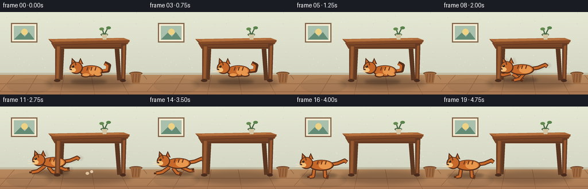
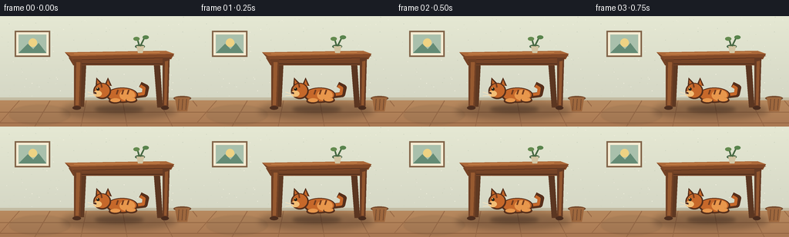

CODING AGENTS AS PIXEL WORLD MODELS
traex/GPT-5.6-Sol · dynamic_spatial_relationship_0015
点击播放 · 原生 RGB 像素
逐轮保存的候选
回放视频、检查图与代码变化。
每份候选均可单独播放。实际图片检查记录在下方工具轨迹中。
候选 01播放与检查图
点击播放 · 原生 RGB 像素


展开代码变化
--- 上一保存版本
+++ 本次保存版本
@@ -0,0 +1,199 @@
+from pathlib import Path
+import math
+import numpy as np
+from PIL import Image, ImageDraw, ImageFilter
+import artifact_io
+
+# Hand-rendered, deterministic 2-D animation. We render large and downsample for clean,
+# softly illustrated edges while retaining RGB output at the requested resolution.
+W,H,N,S = 256,144,20,4
+rng=np.random.default_rng(1501)
+
+def sc(v): return int(round(v*S))
+def box(b): return tuple(sc(x) for x in b)
+def pts(p): return [(sc(x),sc(y)) for x,y in p]
+
+def ellipse(d,b,fill,outline=None,width=1): d.ellipse(box(b),fill=fill,outline=outline,width=sc(width) if outline else 1)
+def poly(d,p,fill,outline=None,width=1): d.polygon(pts(p),fill=fill)
+def line(d,p,fill,width=1,joint='curve'): d.line(pts(p),fill=fill,width=sc(width),joint=joint)
+def rect(d,b,fill,outline=None,width=1): d.rectangle(box(b),fill=fill,outline=outline,width=sc(width) if outline else 1)
+
+def build_room():
+ im=Image.new('RGB',(W*S,H*S),(226,222,200)); d=ImageDraw.Draw(im)
+ # warm sage plaster wall with gentle light from upper-left
+ for y in range(sc(109)):
+ yy=y/S
+ t=yy/109
+ col=(int(229-16*t),int(232-17*t),int(211-14*t))
+ d.line([(0,y),(W*S,y)],fill=col)
+ # faint plaster mottling, fixed in every frame
+ for _ in range(170):
+ x=float(rng.uniform(0,W)); y=float(rng.uniform(0,106)); r=float(rng.uniform(.15,.55))
+ c=(205,211,191) if rng.random()<.55 else (239,237,220)
+ ellipse(d,(x-r,y-r,x+r,y+r),c)
+ # baseboard and floor
+ rect(d,(0,106,256,110),(194,187,162))
+ rect(d,(0,110,256,144),(177,127,82))
+ for y in range(110,144):
+ t=(y-110)/34
+ d.line([(0,sc(y)),(W*S,sc(y))],fill=(int(183-14*t),int(137-17*t),int(94-11*t)),width=S)
+ # floor boards/perspective seams
+ line(d,[(0,125),(256,125)],(147,101,67),1)
+ line(d,[(0,139),(256,139)],(143,96,64),1)
+ for xb,xt in [(-5,25),(45,65),(105,112),(165,159),(224,206),(277,250)]:
+ line(d,[(xb,144),(xt,110)],(151,104,70),1)
+ # soft rug, reinforces floor plane and cat contact
+ rug=Image.new('RGBA',im.size,(0,0,0,0)); rd=ImageDraw.Draw(rug)
+ ellipse(rd,(12,116,91,141),(105,87,65,36)); rug=rug.filter(ImageFilter.GaussianBlur(sc(1.1))); im=Image.alpha_composite(im.convert('RGBA'),rug).convert('RGB'); d=ImageDraw.Draw(im)
+ # left wall picture
+ rect(d,(19,19,65,53),(129,99,72))
+ rect(d,(21,21,63,51),(245,237,212))
+ rect(d,(24,24,60,48),(169,192,172))
+ ellipse(d,(37,29,48,40),(238,210,131))
+ poly(d,[(24,48),(36,36),(43,43),(50,35),(60,48)],(100,139,117))
+ # small basket at far right
+ ellipse(d,(225,104,248,110),(117,76,48))
+ poly(d,[(227,106),(246,106),(243,124),(230,124)],(158,103,61))
+ for x in [232,237,242]: line(d,[(x,108),(x-1,122)],(113,73,47),1)
+ return im
+
+def table_shadow_layer():
+ la=Image.new('RGBA',(W*S,H*S),(0,0,0,0)); ld=ImageDraw.Draw(la)
+ ellipse(ld,(80,112,229,134),(45,30,22,80))
+ return la.filter(ImageFilter.GaussianBlur(sc(4)))
+
+def draw_table(d, fronts_only=False):
+ # fronts_only is used after the cat so that the cat genuinely passes behind the legs.
+ if not fronts_only:
+ # rear legs
+ poly(d,[(199,55),(207,55),(211,119),(204,119)],(91,54,33))
+ poly(d,[(105,56),(112,56),(109,118),(102,118)],(95,57,34))
+ # apron
+ poly(d,[(89,54),(221,54),(216,64),(95,64)],(117,67,38))
+ line(d,[(96,62),(215,62)],(74,43,28),1)
+ # tabletop slab and golden highlight
+ poly(d,[(84,47),(215,45),(226,52),(91,55)],(121,70,40))
+ poly(d,[(84,47),(215,45),(226,49),(92,52)],(173,105,57))
+ line(d,[(96,49),(207,47)],(206,137,77),1)
+ poly(d,[(91,52),(226,49),(222,56),(95,58)],(130,73,39))
+ line(d,[(95,57),(221,54)],(76,43,28),1)
+ # cup and tiny plant, uncomplicated silhouette on tabletop
+ ellipse(d,(175,37,188,42),(75,106,74))
+ poly(d,[(177,39),(187,39),(185,48),(179,48)],(211,197,163))
+ line(d,[(181,39),(178,29)],(71,104,66),2)
+ line(d,[(182,39),(188,27)],(71,104,66),2)
+ ellipse(d,(173,27,181,32),(100,139,79)); ellipse(d,(185,25,193,30),(89,132,77))
+ else:
+ # thick front faces and feet, intentionally in foreground
+ poly(d,[(96,56),(106,56),(104,121),(96,121)],(112,64,36))
+ poly(d,[(99,60),(104,60),(102,116),(98,116)],(151,90,48))
+ ellipse(d,(94,117,105,122),(75,45,30))
+ poly(d,[(211,54),(220,54),(218,121),(211,121)],(101,58,35))
+ poly(d,[(214,59),(218,58),(216,116),(213,116)],(147,87,47))
+ ellipse(d,(209,117,219,122),(72,43,29))
+
+def cat_pose(f):
+ # Hold the first tableau long enough to read clearly, then run left, then settle.
+ if f <= 5:
+ x=151 + math.sin(f*.8)*.7; y=105; mode='crouch'; phase=0
+ elif f==6:
+ x=149; y=107; mode='launch'; phase=0
+ elif f<=14:
+ path={7:144,8:133,9:119,10:103,11:86,12:70,13:57,14:47}
+ x=path[f]; y=101 + 2.2*math.sin((f-7)*math.pi*.85); mode='run'; phase=f-7
+ elif f==15:
+ x=42; y=102; mode='run'; phase=8
+ else:
+ x=40-math.sin((f-16)*.7)*.5; y=104; mode='stand'; phase=f-16
+ return x,y,mode,phase
+
+def cat_silhouette(x,y,mode,phase,alpha=255, offset=(0,0)):
+ la=Image.new('RGBA',(W*S,H*S),(0,0,0,0)); d=ImageDraw.Draw(la)
+ x+=offset[0]; y+=offset[1]
+ outline=(86,47,27,alpha); orange=(198,104,42,alpha); light=(232,151,76,alpha); stripe=(116,60,30,alpha)
+ if mode in ('crouch','launch'):
+ # curled tail first
+ line(d,[(x+20,y-1),(x+37,y-3),(x+39,y-12),(x+31,y-16)],outline,7)
+ line(d,[(x+20,y-2),(x+35,y-4),(x+36,y-11),(x+31,y-14)],orange,4)
+ # low body
+ ellipse(d,(x-13,y-12,x+28,y+8),outline)
+ ellipse(d,(x-11,y-11,x+26,y+6),orange)
+ ellipse(d,(x+4,y-9,x+24,y+5),light)
+ # tucked paws
+ ellipse(d,(x-10,y+2,x+6,y+9),outline); ellipse(d,(x-8,y+2,x+5,y+7),light)
+ ellipse(d,(x+12,y+1,x+27,y+8),outline); ellipse(d,(x+13,y+1,x+25,y+6),light)
+ hx,hy=x-19,y-7
+ else:
+ bob= -1.0*math.sin(phase*math.pi)
+ # tail streaming right, curved upward
+ line(d,[(x+19,y-2),(x+36,y-5),(x+48,y-10),(x+52,y-7)],outline,7)
+ line(d,[(x+19,y-2),(x+36,y-5),(x+48,y-10),(x+51,y-7)],orange,4)
+ # legs behind torso, alternating full gallop poses
+ cyc=phase%4
+ if mode=='stand':
+ legs=[((x-5,y+6),(x-7,y+18),(x-13,y+19)),((x+13,y+5),(x+14,y+18),(x+20,y+19))]
+ elif cyc in (0,3):
+ legs=[((x-8,y+5),(x-21,y+14),(x-31,y+16)),((x+13,y+5),(x+27,y+11),(x+35,y+10)),
+ ((x-2,y+6),(x+5,y+15),(x+13,y+17))]
+ else:
+ legs=[((x-8,y+6),(x+2,y+13),(x+10,y+17)),((x+12,y+5),(x+3,y+15),(x-6,y+17)),
+ ((x-12,y+5),(x-25,y+8),(x-31,y+6))]
+ for a,b,c in legs:
+ line(d,[a,b,c],outline,7); line(d,[a,b,c],orange,4)
+ line(d,[c,(c[0]-4,c[1])],outline,3)
+ # long athletic body
+ ellipse(d,(x-14,y-11+bob,x+29,y+8+bob),outline)
+ ellipse(d,(x-12,y-10+bob,x+27,y+6+bob),orange)
+ ellipse(d,(x+3,y-8+bob,x+25,y+5+bob),light)
+ hx,hy=x-19,y-5+bob
+ # head and ears face left
+ poly(d,[(hx-8,hy-7),(hx-7,hy-18),(hx+1,hy-10)],outline)
+ poly(d,[(hx-6,hy-8),(hx-6,hy-15),(hx-1,hy-9)],orange)
+ poly(d,[(hx+4,hy-9),(hx+8,hy-18),(hx+13,hy-7)],outline)
+ poly(d,[(hx+6,hy-8),(hx+8,hy-15),(hx+11,hy-7)],orange)
+ ellipse(d,(hx-11,hy-11,hx+12,hy+10),outline)
+ ellipse(d,(hx-9,hy-10,hx+10,hy+8),orange)
+ # pale muzzle, nose and eye
+ ellipse(d,(hx-11,hy-1,hx,hy+7),(244,190,117,alpha))
+ ellipse(d,(hx-11,hy+1,hx-7,hy+4),(76,43,34,alpha))
+ ellipse(d,(hx-7,hy-5,hx-3,hy-1),(41,35,25,alpha))
+ ellipse(d,(hx-6.2,hy-4.7,hx-5.1,hy-3.5),(245,221,139,alpha))
+ # whiskers
+ line(d,[(hx-8,hy+4),(hx-18,hy+1)],(245,226,190,alpha),1)
+ line(d,[(hx-8,hy+5),(hx-18,hy+6)],(245,226,190,alpha),1)
+ # tabby markings make the subject unmistakably feline
+ for dx in [2,9,16]:
+ line(d,[(x+dx,y-9),(x+dx-2,y-3)],stripe,2)
+ line(d,[(hx-1,hy-10),(hx,hy-5)],stripe,2)
+ return la
+
+room=build_room()
+frames=[]
+for f in range(N):
+ im=room.convert('RGBA')
+ im=Image.alpha_composite(im,table_shadow_layer())
+ d=ImageDraw.Draw(im)
+ draw_table(d,False)
+ x,y,mode,phase=cat_pose(f)
+ # soft contact shadow (travels with cat)
+ sh=Image.new('RGBA',im.size,(0,0,0,0)); sd=ImageDraw.Draw(sh)
+ ellipse(sd,(x-28,y+12,x+35,y+21),(35,22,18,90))
+ sh=sh.filter(ImageFilter.GaussianBlur(sc(2.2))); im=Image.alpha_composite(im,sh)
+ # restrained trailing smear only during the fast middle of the run
+ if mode=='run' and 8<=f<=13:
+ ghost=cat_silhouette(x,y,mode,phase,alpha=35,offset=(5,0)).filter(ImageFilter.GaussianBlur(sc(1.3)))
+ im=Image.alpha_composite(im,ghost)
+ im=Image.alpha_composite(im,cat_silhouette(x,y,mode,phase))
+ # table legs occlude cat while it is beneath/behind them
+ draw_table(ImageDraw.Draw(im),True)
+ # tiny dust puffs mark departure, without covering the spatial relation
+ if f in (9,10,11):
+ dd=ImageDraw.Draw(im)
+ a=(f-9)*2
+ ellipse(dd,(145+a,118-a,151+a,123-a),(220,194,157,100))
+ ellipse(dd,(153+a,115-a,158+a,120-a),(225,202,168,80))
+ out=im.convert('RGB').resize((W,H),Image.Resampling.LANCZOS)
+ frames.append(np.asarray(out,dtype=np.uint8))
+frames=np.stack(frames)
+assert frames.shape==(20,144,256,3) and frames.dtype==np.uint8
+artifact_io.save(frames,Path(__file__).resolve().parent)
可观测工具轨迹
实际执行的命令与返回图片。
命令 1exit 0
/bin/bash -lc "cat prompt.txt && printf '\\n---RULES---\\n' && cat GENERATION_RULES.md && printf '\\n---SPEC---\\n' && cat task_spec.json"
命令 2exit 1
/bin/bash -lc "find . -maxdepth 2 -type f -printf '%p\\n' | sort && printf '\\nBINS\\n' && command -v ffmpeg && command -v python3 && python3 - <<'PY' mods=['PIL','numpy','cv2','imageio','moviepy','cairo'] for m in mods: try: x=__import__(m); print(m,'ok') except Exception as e: print(m,'no',e) PY"
命令 3exit 0
/bin/bash -lc "python3 - <<'PY' mods=['PIL','numpy','cv2','imageio','moviepy','cairo'] for m in mods: try: x=__import__(m); print(m,'ok',getattr(x,'__version__','')) except Exception as e: print(m,'no',repr(e)) PY cat artifact_io.py"
命令 4exit 0
/bin/bash -lc "cat > generate.py <<'PY'
from pathlib import Path
import math
import numpy as np
from PIL import Image, ImageDraw, ImageFilter
import artifact_io
# Hand-rendered, deterministic 2-D animation. We render large and downsample for clean,
# softly illustrated edges while retaining RGB output at the requested resolution.
W,H,N,S = 256,144,20,4
rng=np.random.default_rng(1501)
def sc(v): return int(round(v*S))
def box(b): return tuple(sc(x) for x in b)
def pts(p): return [(sc(x),sc(y)) for x,y in p]
def ellipse(d,b,fill,outline=None,width=1): d.ellipse(box(b),fill=fill,outline=outline,width=sc(width) if outline else 1)
def poly(d,p,fill,outline=None,width=1): d.polygon(pts(p),fill=fill)
def line(d,p,fill,width=1,joint='curve'): d.line(pts(p),fill=fill,width=sc(width),joint=joint)
def rect(d,b,fill,outline=None,width=1): d.rectangle(box(b),fill=fill,outline=outline,width=sc(width) if outline else 1)
def build_room():
im=Image.new('RGB',(W*S,H*S),(226,222,200)); d=ImageDraw.Draw(im)
# warm sage plaster wall with gentle light from upper-left
for y in range(sc(109)):
yy=y/S
t=yy/109
col=(int(229-16*t),int(232-17*t),int(211-14*t))
d.line([(0,y),(W*S,y)],fill=col)
# faint plaster mottling, fixed in every frame
for _ in range(170):
x=float(rng.uniform(0,W)); y=float(rng.uniform(0,106)); r=float(rng.uniform(.15,.55))
c=(205,211,191) if rng.random()<.55 else (239,237,220)
ellipse(d,(x-r,y-r,x+r,y+r),c)
# baseboard and floor
rect(d,(0,106,256,110),(194,187,162))
rect(d,(0,110,256,144),(177,127,82))
for y in range(110,144):
t=(y-110)/34
d.line([(0,sc(y)),(W*S,sc(y))],fill=(int(183-14*t),int(137-17*t),int(94-11*t)),width=S)
# floor boards/perspective seams
line(d,[(0,125),(256,125)],(147,101,67),1)
line(d,[(0,139),(256,139)],(143,96,64),1)
for xb,xt in [(-5,25),(45,65),(105,112),(165,159),(224,206),(277,250)]:
line(d,[(xb,144),(xt,110)],(151,104,70),1)
# soft rug, reinforces floor plane and cat contact
rug=Image.new('RGBA',im.size,(0,0,0,0)); rd=ImageDraw.Draw(rug)
ellipse(rd,(12,116,91,141),(105,87,65,36)); rug=rug.filter(ImageFilter.GaussianBlur(sc(1.1))); im=Image.alpha_composite(im.convert('RGBA'),rug).convert('RGB'); d=ImageDraw.Draw(im)
# left wall picture
rect(d,(19,19,65,53),(129,99,72))
rect(d,(21,21,63,51),(245,237,212))
rect(d,(24,24,60,48),(169,192,172))
ellipse(d,(37,29,48,40),(238,210,131))
poly(d,[(24,48),(36,36),(43,43),(50,35),(60,48)],(100,139,117))
# small basket at far right
ellipse(d,(225,104,248,110),(117,76,48))
poly(d,[(227,106),(246,106),(243,124),(230,124)],(158,103,61))
for x in [232,237,242]: line(d,[(x,108),(x-1,122)],(113,73,47),1)
return im
def table_shadow_layer():
la=Image.new('RGBA',(W*S,H*S),(0,0,0,0)); ld=ImageDraw.Draw(la)
ellipse(ld,(80,112,229,134),(45,30,22,80))
return la.filter(ImageFilter.GaussianBlur(sc(4)))
def draw_table(d, fronts_only=False):
# fronts_only is used after the cat so that the cat genuinely passes behind the legs.
if not fronts_only:
# rear legs
poly(d,[(199,55),(207,55),(211,119),(204,119)],(91,54,33))
poly(d,[(105,56),(112,56),(109,118),(102,118)],(95,57,34))
# apron
poly(d,[(89,54),(221,54),(216,64),(95,64)],(117,67,38))
line(d,[(96,62),(215,62)],(74,43,28),1)
# tabletop slab and golden highlight
poly(d,[(84,47),(215,45),(226,52),(91,55)],(121,70,40))
poly(d,[(84,47),(215,45),(226,49),(92,52)],(173,105,57))
line(d,[(96,49),(207,47)],(206,137,77),1)
poly(d,[(91,52),(226,49),(222,56),(95,58)],(130,73,39))
line(d,[(95,57),(221,54)],(76,43,28),1)
# cup and tiny plant, uncomplicated silhouette on tabletop
ellipse(d,(175,37,188,42),(75,106,74))
poly(d,[(177,39),(187,39),(185,48),(179,48)],(211,197,163))
line(d,[(181,39),(178,29)],(71,104,66),2)
line(d,[(182,39),(188,27)],(71,104,66),2)
ellipse(d,(173,27,181,32),(100,139,79)); ellipse(d,(185,25,193,30),(89,132,77))
else:
# thick front faces and feet, intentionally in foreground
poly(d,[(96,56),(106,56),(104,121),(96,121)],(112,64,36))
poly(d,[(99,60),(104,60),(102,116),(98,116)],(151,90,48))
ellipse(d,(94,117,105,122),(75,45,30))
poly(d,[(211,54),(220,54),(218,121),(211,121)],(101,58,35))
poly(d,[(214,59),(218,58),(216,116),(213,116)],(147,87,47))
ellipse(d,(209,117,219,122),(72,43,29))
def cat_pose(f):
# Hold the first tableau long enough to read clearly, then run left, then settle.
if f <= 5:
x=151 + math.sin(f*.8)*.7; y=105; mode='crouch'; phase=0
elif f==6:
x=149; y=107; mode='launch'; phase=0
elif f<=14:
path={7:144,8:133,9:119,10:103,11:86,12:70,13:57,14:47}
x=path[f]; y=101 + 2.2*math.sin((f-7)*math.pi*.85); mode='run'; phase=f-7
elif f==15:
x=42; y=102; mode='run'; phase=8
else:
x=40-math.sin((f-16)*.7)*.5; y=104; mode='stand'; phase=f-16
return x,y,mode,phase
def cat_silhouette(x,y,mode,phase,alpha=255, offset=(0,0)):
la=Image.new('RGBA',(W*S,H*S),(0,0,0,0)); d=ImageDraw.Draw(la)
x+=offset[0]; y+=offset[1]
outline=(86,47,27,alpha); orange=(198,104,42,alpha); light=(232,151,76,alpha); stripe=(116,60,30,alpha)
if mode in ('crouch','launch'):
# curled tail first
line(d,[(x+20,y-1),(x+37,y-3),(x+39,y-12),(x+31,y-16)],outline,7)
line(d,[(x+20,y-2),(x+35,y-4),(x+36,y-11),(x+31,y-14)],orange,4)
# low body
ellipse(d,(x-13,y-12,x+28,y+8),outline)
ellipse(d,(x-11,y-11,x+26,y+6),orange)
ellipse(d,(x+4,y-9,x+24,y+5),light)
# tucked paws
ellipse(d,(x-10,y+2,x+6,y+9),outline); ellipse(d,(x-8,y+2,x+5,y+7),light)
ellipse(d,(x+12,y+1,x+27,y+8),outline); ellipse(d,(x+13,y+1,x+25,y+6),light)
hx,hy=x-19,y-7
else:
bob= -1.0*math.sin(phase*math.pi)
# tail streaming right, curved upward
line(d,[(x+19,y-2),(x+36,y-5),(x+48,y-10),(x+52,y-7)],outline,7)
line(d,[(x+19,y-2),(x+36,y-5),(x+48,y-10),(x+51,y-7)],orange,4)
# legs behind torso, alternating full gallop poses
cyc=phase%4
if mode=='stand':
legs=[((x-5,y+6),(x-7,y+18),(x-13,y+19)),((x+13,y+5),(x+14,y+18),(x+20,y+19))]
elif cyc in (0,3):
legs=[((x-8,y+5),(x-21,y+14),(x-31,y+16)),((x+13,y+5),(x+27,y+11),(x+35,y+10)),
((x-2,y+6),(x+5,y+15),(x+13,y+17))]
else:
legs=[((x-8,y+6),(x+2,y+13),(x+10,y+17)),((x+12,y+5),(x+3,y+15),(x-6,y+17)),
((x-12,y+5),(x-25,y+8),(x-31,y+6))]
for a,b,c in legs:
line(d,[a,b,c],outline,7); line(d,[a,b,c],orange,4)
line(d,[c,(c[0]-4,c[1])],outline,3)
# long athletic body
ellipse(d,(x-14,y-11+bob,x+29,y+8+bob),outline)
ellipse(d,(x-12,y-10+bob,x+27,y+6+bob),orange)
ellipse(d,(x+3,y-8+bob,x+25,y+5+bob),light)
hx,hy=x-19,y-5+bob
# head and ears face left
poly(d,[(hx-8,hy-7),(hx-7,hy-18),(hx+1,hy-10)],outline)
poly(d,[(hx-6,hy-8),(hx-6,hy-15),(hx-1,hy-9)],orange)
poly(d,[(hx+4,hy-9),(hx+8,hy-18),(hx+13,hy-7)],outline)
poly(d,[(hx+6,hy-8),(hx+8,hy-15),(hx+11,hy-7)],orange)
ellipse(d,(hx-11,hy-11,hx+12,hy+10),outline)
ellipse(d,(hx-9,hy-10,hx+10,hy+8),orange)
# pale muzzle, nose and eye
ellipse(d,(hx-11,hy-1,hx,hy+7),(244,190,117,alpha))
ellipse(d,(hx-11,hy+1,hx-7,hy+4),(76,43,34,alpha))
ellipse(d,(hx-7,hy-5,hx-3,hy-1),(41,35,25,alpha))
ellipse(d,(hx-6.2,hy-4.7,hx-5.1,hy-3.5),(245,221,139,alpha))
# whiskers
line(d,[(hx-8,hy+4),(hx-18,hy+1)],(245,226,190,alpha),1)
line(d,[(hx-8,hy+5),(hx-18,hy+6)],(245,226,190,alpha),1)
# tabby markings make the subject unmistakably feline
for dx in [2,9,16]:
line(d,[(x+dx,y-9),(x+dx-2,y-3)],stripe,2)
line(d,[(hx-1,hy-10),(hx,hy-5)],stripe,2)
return la
room=build_room()
frames=[]
for f in range(N):
im=room.convert('RGBA')
im=Image.alpha_composite(im,table_shadow_layer())
d=ImageDraw.Draw(im)
draw_table(d,False)
x,y,mode,phase=cat_pose(f)
# soft contact shadow (travels with cat)
sh=Image.new('RGBA',im.size,(0,0,0,0)); sd=ImageDraw.Draw(sh)
ellipse(sd,(x-28,y+12,x+35,y+21),(35,22,18,90))
sh=sh.filter(ImageFilter.GaussianBlur(sc(2.2))); im=Image.alpha_composite(im,sh)
# restrained trailing smear only during the fast middle of the run
if mode=='run' and 8<=f<=13:
ghost=cat_silhouette(x,y,mode,phase,alpha=35,offset=(5,0)).filter(ImageFilter.GaussianBlur(sc(1.3)))
im=Image.alpha_composite(im,ghost)
im=Image.alpha_composite(im,cat_silhouette(x,y,mode,phase))
# table legs occlude cat while it is beneath/behind them
draw_table(ImageDraw.Draw(im),True)
# tiny dust puffs mark departure, without covering the spatial relation
if f in (9,10,11):
dd=ImageDraw.Draw(im)
a=(f-9)*2
ellipse(dd,(145+a,118-a,151+a,123-a),(220,194,157,100))
ellipse(dd,(153+a,115-a,158+a,120-a),(225,202,168,80))
out=im.convert('RGB').resize((W,H),Image.Resampling.LANCZOS)
frames.append(np.asarray(out,dtype=np.uint8))
frames=np.stack(frames)
assert frames.shape==(20,144,256,3) and frames.dtype==np.uint8
artifact_io.save(frames,Path(__file__).resolve().parent)
PY
python3 generate.py
ls -lh pixels.npz inspection.png index.html frames/00.png frames/19.png"视觉工具实际返回图片 1

保存候选 1 份；完成命令 4 次；可验证图片返回 1 张。原始 API 响应与完整日志保留在本地。